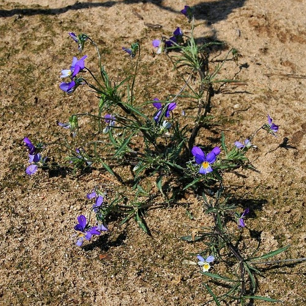

Wildes Stiefmütterchen
-
Das Wilde Stiefmütterchen, im Volksmund auch
Ackerveilchen, Muttergottesschuh, Mädchenaugen,
Schöngesicht oder Liebesgesichtli, ist eine Pflanzenart
innerhalb der Familie der Veilchengewächse (Violaceae).
-
Milder Grundgeschmack, salatartig und etwas aromatisch frisch.
-
Am aromareichsten unmittelbar nach dem Erblühen. Kandieren, Gelee, roh als Dekoration, in Teig für Süssgebäck oder Aromageber für Essig und Tee.
-
Die jungen Blätter und Triebe roh in Salaten oder gegart als eindickende Zutat für Gemüsegerichte, Füllungen und Kräutersaucen. Ausgepresst als Frischsaftgetränk resp. als Zusatz in Spirituosen, Essig und Teemischungen.
-
Geröstet als eine Art Kaffee verwendbar.
-
Das getrocknete Kraut mit Blüten wird äusserlich und innerlich bei Hauterkrankungen, zur Blutreinigung und Stoffwechselanregung verwendet. Empfohlen bei fiebrigen Erkältungen, Keuchhusten und Halsentzündungen. Zur Teebereitung 2 Teelöffel des Krautes pro Tasse.
-
Auf leicht sauren Sand- oder Lehmböden am Wegesrand
oder auf Böschungen